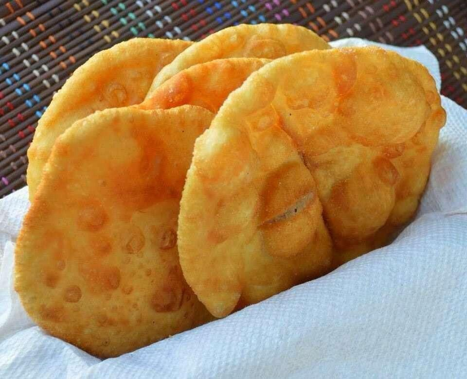
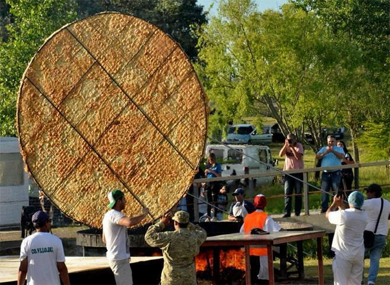
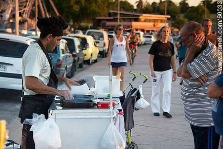

The Origin of the “Torta frita” Festival
Flavor, Tradition, and Community in Uruguay
In Uruguay, there are traditions that are not only eaten but also celebrated. One of them is the humble yet beloved fried cake, a simple food that has transcended generations and now has its own national festival. Every year, especially in the department of Canelones, thousands of people gather to celebrate the cultural identity behind this Uruguayan classic.

Torta frita uruguaya
The “Torta frita” has humble origins, linked to the country's rural life. According to the Uruguayan Ministry of Tourism, this food originated as a practical solution for gauchos and rural inhabitants, who needed quick meals using basic ingredients such as flour, lard or oil, water, and salt. Cooked in hot fat or on an improvised grill, fried cakes became a symbol of the simple life of the Uruguayan countryside.
Over time, this culinary tradition has transformed into an important cultural element. In the city of Canelones, the famous National “torta frita” Festival takes place, an event that brings together thousands of people every year. According to the canelones Departmental Government, this celebration not only seeks to pay homage to the food, but also to strengthen local identity and promote cultural tourism in the region.

Peach torta frita festival
During the festival, large bonfires are lit where neighbors and visitors prepare “torta frita” together. The event includes music, craft fairs, and family activities, becoming a meeting point where tradition blends with modern celebration. The Ministry of Education and Culture emphasizes that these festivities help keep popular customs alive and pass them on to new generations. They are one of the best known appetizers for the gray, cold and rainy days where you can find fried cake stalls on the streets of the cities and towns of the country.

Torta frita stand in Ramírez beach
One of the many legends by which we associate rain and cold with fried cake is that the women of the houses of the migrant colonies collected the rainwater and prepared it with it. Although we can't know exactly how they arrived, it is believed that it is a German heritage and that there they are called Kreppel.